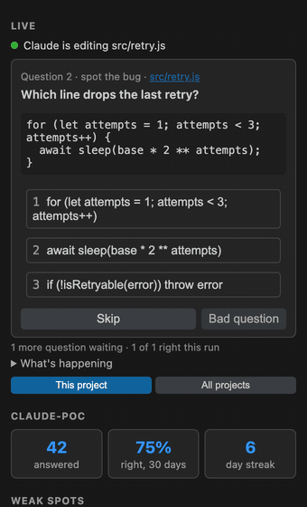

Claude Code stable
Hooks are attached per launch with --settings. Nothing on disk changes.
$ hyperfocus
hyperfocus runs your coding agent for you. Once it starts changing code, your terminal switches to a short quiz about the change it is making right now. The moment it finishes, you're switched straight back, with a recap.
npm install -g @ddalus/hyperfocus
A real recording of hyperfocus --demo: a scripted agent adds retries to token refresh, the quiz asks about the code it just wrote, the live view shows what it is doing, and the moment it finishes you are back with a recap.
The minutes you spend waiting on an agent are usually spent somewhere else: a feed, a chat, your phone. hyperfocus uses them to walk you through what the agent is doing, so you understand the change before you review it.
hyperfocus takes every argument claude does and runs the real Claude Code in your terminal. Nothing in your settings changes.
Once it has been busy for 8 seconds and made its first edit or plan, the screen switches to the focus view. Quick answers and runs that only read code never interrupt you.
A small, cheap model call reads your prompt, the diffs and the code around them, then asks why it's done this way and what could break.
The moment Claude finishes or needs you, you're back, with a bell and a "while you were away" card listing what changed.
A fixed timer quizzes you about nothing, then yanks you back a second later. hyperfocus watches the run instead: what the agent has done, how big its plan is, and how long runs usually take in this project.
The same quiz, recap, notes and stats around Claude Code, OpenAI Codex or Google Gemini. Your agent's own settings files are never touched, and if Claude Code is installed, it writes the questions for all three.
Hooks are attached per launch with --settings. Nothing on disk changes.
Runs with a mirrored CODEX_HOME: your auth and sessions stay put, and you trust the hook once.
Gets hyperfocus's hooks through a copy of its system settings. Your ~/.gemini is left alone.
Code shown in a question is checked against the diff, so it's always code Claude really wrote. Options are shuffled, and questions get harder when you keep getting them right.
The reasoning behind the change: tradeoffs, failure modes, the edge cases it has to handle.
With a fixed 200ms backoff across many clients, what can go wrong? ▸ 1 Synchronised retry waves 2 Exponential slowdown
A few real lines from the change, and what they get wrong or leave out.
+ for (let i = 0; i < n; i++) { + await sleep(200); ▸ 1 Jitter between attempts
What a few lines Claude just wrote return for one specific input.
+ if (b === 0) throw new RangeError() modulo(7, 0) does what? ▸ 1 Throws a RangeError
Which file will Claude edit next? Lock in a guess and keep going. Claude's next edit settles it.
Which file will Claude edit next? ● 2 src/auth.ts ✔ Prediction right
Say you had Claude build a circuit breaker, then changed course and had it use retries instead. Questions about the breaker are now about code that no longer exists.
Every question remembers the distinctive lines its change added. If those lines are gone from the file, the change was reverted or rewritten, and hyperfocus leaves it out of your review, your merge checklist and your session notes.
Press l to see what the agent is reading, editing and running, and the last lines of Claude's own screen. It's hidden by default, so the question has the screen to itself.
After any answer, press f and ask "why not a circuit breaker?". The answer uses the diff, the question and the thread so far.
The recap lists the questions you got wrong whose code is still there: the parts of the change you don't fully understand yet.
hyperfocus --notes writes the session up as markdown for a PR description. hyperfocus --review asks again the questions you missed.
Press z twice for no more quizzes this session, or run hyperfocus --quiet --here to keep one project quiet for good. Ctrl-] still opens a quiz.
hyperfocus --demo replays a scripted change through the real quiz, with no agent needed. hyperfocus --doctor checks your whole setup, down to one real question.
No account and no API key. It runs your own claude, so it works with a subscription, an API key, Bedrock or Vertex. A batch of questions costs about $0.003.
Tokens and passwords in diffs and commands are replaced with [redacted] before anything is stored, shown or sent. .env files and keys are never read.
Every question is tagged with what it's really about: concurrency, error handling, state, API design. hyperfocus --stats shows your accuracy over the last 30 days, by kind of question and in each project, and the concepts you miss most.
Press b on a bad question and it never counts, never comes back, and steers the next ones away from it.
Questions you got wrong about code that is still there become a checklist: in the recap, in your PR description, and, if you want, in a git hook that never blocks a push.
hyperfocus --install-hook adds it; --uninstall-hook removes exactly that.hyperfocus --notes writes the session up for a pull request.| Ctrl-] | anywhere | Switch between Claude and the focus view |
| ↑ ↓ Enter | question | Choose an option and answer. 1–4 or a click works too. |
| s | question | Skip the question |
| b | question | A bad question: skip it unscored, and steer future ones away from it |
| z z | focus view | Quiet for the rest of this session |
| f | after an answer | Ask your own follow-up |
| w | after an answer | Save the question, your answer and the explanation to your notebook (hyperfocus --saved) |
| l | focus view | Show or hide the live view |
| Esc | focus view | Back to Claude. The question waits for next time. |
| c | when Claude finishes | Keep going with the quiz instead of heading back |
The hyperfocus extension puts the quiz in the sidebar. While hyperfocus runs in your folder, in VS Code's terminal or any other, the panel shows what the agent is doing and the question you're being asked. Click an answer or press 1–9; the terminal keeps up.
It never calls a model and only talks to hyperfocus on your machine.
Install from the VS Code Marketplace ↗
or code --install-extension ddalus.hyperfocus

hyperfocus is MIT-licensed and free, with no account and no server. It writes the questions by asking your own coding agent, so they come out of your Claude subscription or API credit, the way anything else you ask Claude does. Here is exactly how much.
Three questions from one short Claude Haiku call: about 1,000 tokens in and 600 out, measured on a real change. No tools, no MCP servers, no saved session, thinking off.
One to four batches, depending on how much the agent changes: a new batch comes after every few edits, or when you run out of questions. Each follow-up you ask is one more call about the same size.
About 30 agent runs. On Claude Pro or Max nothing is billed separately: it counts toward your usage limits, and Haiku calls this small barely move them.
Your agent costs the same as before. hyperfocus doesn't add anything to its context or its prompts; it only listens to its hooks.
With Codex or Gemini and no Claude Code, the agent writes the questions with its own default model on your plan. That is a larger model than Haiku, so each question costs more.
Reviewing a staged change (--staged, or the button in VS Code) is one batch: about $0.004.
Free to use: --stats, --notes, the recap and the pre-push list all come from your local history. --review re-asks saved questions without a call; only follow-ups there use one. --doctor makes one test call.
To spend less: set "questionsPerBatch" lower in ~/.hyperfocus/config.json, press z z to go quiet for a session, or run hyperfocus --no-auto and open the quiz yourself with Ctrl-].
Prices are Claude Haiku API list prices on the day we measured; your figures will vary with the size of the change.
You need Node.js 22 or newer and a coding agent, installed and logged in: Claude Code, Codex or Gemini CLI. If you already use one, you're set.
Linux: installing compiles one native dependency, so you need python3, make and a C++ compiler (sudo apt install build-essential python3). macOS needs nothing extra.
Windows is experimental: Windows Terminal with PowerShell, keyboard only for now.
Settings live in ~/.hyperfocus/config.json: how long to wait before the quiz opens, the model, which kinds of question, notifications, the mouse, the live view, and quiet mode per project. Every key is optional.
Straight from the changelog of the version on npm, so it's always what you'd actually install.
Loading the changelog…